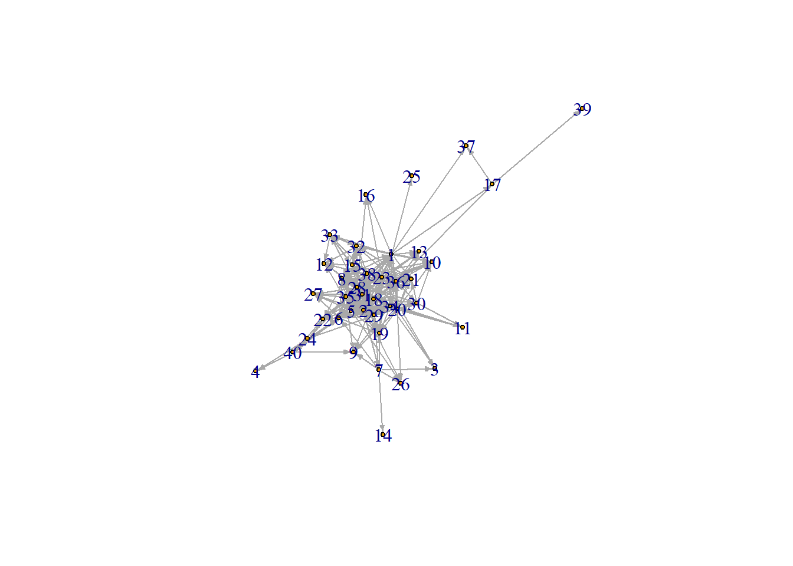

[SCRAP THIS] The options for each name are the following:
I have texted in the last 7 days
I have met during my time in MBDS
Is my friend
I ask for advice/help
Asks me for help/advice
–
In this report, we are interested in conducting a network analysis among the BDS-516 Spring 2021 class. First, we import the data and set up the relevant libraries (include = FALSE).
We beginw with our separate node and edge lists, titled hw_nodelist and hw_edgelist.
Here, we show ….
There are a few key insights from this visualization: 1) This appears to resemble a scale-free network (some respondents do not know others in the network well, while others appear to know many others) 2) Respondent 39 appears to be the least connected to the rest of the network
library(igraph)## Warning: package 'igraph' was built under R version 4.0.4##
## Attaching package: 'igraph'## The following objects are masked from 'package:lubridate':
##
## %--%, union## The following objects are masked from 'package:dplyr':
##
## as_data_frame, groups, union## The following objects are masked from 'package:purrr':
##
## compose, simplify## The following object is masked from 'package:tidyr':
##
## crossing## The following object is masked from 'package:tibble':
##
## as_data_frame## The following objects are masked from 'package:stats':
##
## decompose, spectrum## The following object is masked from 'package:base':
##
## unionnewnetwork <- graph_from_data_frame(d = hw_edgelist, vertices = hw_nodelist, directed = TRUE)
plot(newnetwork, edge.arrow.size = 0.1, vertex.size = 3)
The network has a reciprocity and transitivity of ~0.5, suggesting that about half of the time, a respondent in the network indicated being directly and indirectly tied to someone else, when the respondent on the other end did not agree. This may partially be the result of measurement error.
edge_density(newnetwork, loops=F)## [1] 0.4442308reciprocity(newnetwork)## [1] 0.4992785transitivity(newnetwork, type="global")## [1] 0.5005313diameter(newnetwork, directed=F, weights=NA)## [1] 5deg <- degree(newnetwork, mode="all")
mean(deg)## [1] 34.65plot(newnetwork, vertex.size=deg/10, edge.arrow.size = 0.1)hist(deg, breaks = 20, main="Histogram of node degree")Centralization of 0.735 suggests that the network is relatively highly centralized around particiular respondents; in other words, certain respondents are common “connections” to the rest of the network.
degree(newnetwork, mode="in")## 1 2 3 4 5 6 7 8 9 10 11 12 13 14 15 16 17 18 19 20 21 22 23 24 25 26 27 28 29 30 31 32 33 34 35 36
## 9 36 6 10 38 41 1 24 14 10 6 18 12 5 12 4 1 46 28 23 20 29 10 7 3 8 16 43 37 18 32 13 13 28 25 27
## 37 38 39 40
## 2 9 1 8centr_degree(newnetwork, mode="in", normalized=T)## $res
## [1] 9 36 6 10 38 41 1 24 14 10 6 18 12 5 12 4 1 46 28 23 20 29 10 7 3 8 16 43 37 18 32 13 13 28 25
## [36] 27 2 9 1 8
##
## $centralization
## [1] 0.7352564
##
## $theoretical_max
## [1] 1560closeness(newnetwork, mode="all", weights=NA)## 1 2 3 4 5 6 7 8 9
## 0.017857143 0.016129032 0.011494253 0.008620690 0.013698630 0.016666667 0.012987013 0.015151515 0.013513514
## 10 11 12 13 14 15 16 17 18
## 0.013698630 0.011363636 0.012658228 0.012345679 0.008695652 0.014285714 0.012195122 0.011627907 0.015384615
## 19 20 21 22 23 24 25 26 27
## 0.014492754 0.016393443 0.014705882 0.013333333 0.015151515 0.012500000 0.010638298 0.011494253 0.012820513
## 28 29 30 31 32 33 34 35 36
## 0.018867925 0.015873016 0.012987013 0.015625000 0.013698630 0.012500000 0.015384615 0.016129032 0.015384615
## 37 38 39 40
## 0.010869565 0.014492754 0.008064516 0.010989011betweenness(newnetwork, directed=T, weights=NA)## 1 2 3 4 5 6 7 8 9
## 84.0616886 28.5512815 0.0000000 0.0000000 13.1250010 91.5637434 22.3636950 0.0000000 0.0000000
## 10 11 12 13 14 15 16 17 18
## 0.0000000 0.0000000 0.0000000 0.0000000 0.0000000 15.5350122 0.0000000 20.0000000 68.0050823
## 19 20 21 22 23 24 25 26 27
## 0.0000000 55.4739079 0.0000000 0.0000000 11.2174072 18.5381747 0.0000000 0.0000000 0.0000000
## 28 29 30 31 32 33 34 35 36
## 197.9156390 0.0000000 1.2811184 23.4809215 4.4627833 0.2936508 28.2161521 22.9380115 48.1758511
## 37 38 39 40
## 0.0000000 6.1281513 0.0000000 12.6727273mean_distance(newnetwork, directed=T)## [1] 1.945055distances(newnetwork, weights=NA)## 1 2 3 4 5 6 7 8 9 10 11 12 13 14 15 16 17 18 19 20 21 22 23 24 25 26 27 28 29 30 31 32 33 34 35 36 37 38
## 1 0 1 2 3 2 1 2 1 1 1 2 2 1 3 1 1 1 2 1 1 1 2 1 2 1 2 2 1 1 2 1 1 1 1 1 1 1 1
## 2 1 0 2 3 1 1 1 1 2 2 2 2 2 2 2 2 2 1 1 2 1 2 1 2 2 1 1 1 1 2 1 2 2 1 1 1 2 1
## 3 2 2 0 4 2 2 1 2 2 2 2 3 2 2 2 2 3 2 2 1 2 2 1 3 3 2 3 2 2 2 2 3 3 1 2 2 3 2
## 4 3 3 4 0 3 2 3 3 2 3 3 3 4 4 3 3 4 2 3 3 3 2 3 1 4 4 3 2 2 3 3 3 3 3 3 3 4 3
## 5 2 1 2 3 0 1 2 2 2 2 2 1 2 3 2 2 3 1 1 2 2 2 2 2 3 1 1 1 2 2 1 2 2 1 1 2 3 1
## 6 1 1 2 2 1 0 1 1 2 2 2 2 2 2 2 2 2 1 1 1 1 1 1 1 2 2 1 1 1 2 1 2 2 1 1 2 2 2
## 7 2 1 1 3 2 1 0 2 1 2 3 2 3 1 2 2 3 2 1 2 2 2 2 2 3 1 2 1 1 2 2 2 2 2 2 2 3 2
## 8 1 1 2 3 2 1 2 0 2 2 2 2 2 3 1 2 2 1 2 1 2 2 1 2 2 2 2 1 2 1 1 1 2 1 1 1 2 1
## 9 1 2 2 2 2 2 1 2 0 2 2 3 2 2 2 2 2 2 2 1 2 2 2 2 2 2 2 2 2 2 2 2 2 1 1 2 2 2
## 10 1 2 2 3 2 2 2 2 2 0 2 2 2 3 2 2 2 2 2 1 2 2 2 2 2 2 2 1 2 1 1 1 2 2 1 1 2 1
## 11 2 2 2 3 2 2 3 2 2 2 0 2 2 4 2 3 3 1 2 1 2 2 2 2 3 2 3 2 2 1 2 3 3 1 2 2 3 2
## 12 2 2 3 3 1 2 2 2 3 2 2 0 2 3 1 2 2 1 2 2 2 2 2 2 3 2 2 1 2 2 2 1 1 2 2 1 3 2
## 13 1 2 2 4 2 2 3 2 2 2 2 2 0 4 2 2 2 2 2 1 2 2 1 3 2 2 2 2 2 2 1 2 2 2 2 1 2 2
## 14 3 2 2 4 3 2 1 3 2 3 4 3 4 0 3 3 4 3 2 3 3 3 3 3 4 2 3 2 2 3 3 3 3 3 3 3 4 3
## 15 1 2 2 3 2 2 2 1 2 2 2 1 2 3 0 2 2 1 2 2 1 1 1 2 2 3 2 1 1 2 2 1 1 1 2 2 2 2
## 16 1 2 2 3 2 2 2 2 2 2 3 2 2 3 2 0 2 2 2 2 2 2 1 2 2 3 2 1 2 3 2 2 2 2 2 2 2 2
## 17 1 2 3 4 3 2 3 2 2 2 3 2 2 4 2 2 0 2 2 2 2 3 2 3 2 3 2 2 2 2 2 2 2 2 2 1 1 2
## 18 2 1 2 2 1 1 2 1 2 2 1 1 2 3 1 2 2 0 2 1 2 1 1 1 3 2 2 1 2 1 1 2 2 1 1 1 3 2
## 19 1 1 2 3 1 1 1 2 2 2 2 2 2 2 2 2 2 2 0 1 2 2 1 2 2 2 2 1 2 2 1 2 2 1 1 2 2 2
## 20 1 2 1 3 2 1 2 1 1 1 1 2 1 3 2 2 2 1 1 0 1 1 2 2 2 1 2 1 1 1 2 2 2 1 1 1 2 1
## 21 1 1 2 3 2 1 2 2 2 2 2 2 2 3 1 2 2 2 2 1 0 2 1 2 2 2 2 1 2 1 1 1 2 2 1 1 2 1
## 22 2 2 2 2 2 1 2 2 2 2 2 2 2 3 1 2 3 1 2 1 2 0 2 1 3 2 2 1 2 2 1 2 2 2 1 2 3 2
## 23 1 1 1 3 2 1 2 1 2 2 2 2 1 3 1 1 2 1 1 2 1 2 0 2 2 2 2 1 1 2 1 2 2 2 1 2 2 2
## 24 2 2 3 1 2 1 2 2 2 2 2 2 3 3 2 2 3 1 2 2 2 1 2 0 3 3 2 1 1 2 2 2 2 2 2 2 3 2
## 25 1 2 3 4 3 2 3 2 2 2 3 3 2 4 2 2 2 3 2 2 2 3 2 3 0 3 3 2 2 3 2 2 2 2 2 2 2 2
## 39 40
## 1 2 2
## 2 3 2
## 3 4 3
## 4 5 1
## 5 4 2
## 6 3 1
## 7 4 2
## 8 3 2
## 9 3 1
## 10 3 3
## 11 4 3
## 12 3 3
## 13 3 3
## 14 5 3
## 15 3 2
## 16 3 3
## 17 1 3
## 18 3 2
## 19 3 2
## 20 3 2
## 21 3 2
## 22 4 1
## 23 3 2
## 24 4 1
## 25 3 3
## [ reached getOption("max.print") -- omitted 15 rows ]ceb <- cluster_edge_betweenness(newnetwork)
dendPlot(ceb, mode="hclust")plot(ceb, newnetwork, vertex.size = 3, edge.arrow.size = 0.2)clp <- cluster_label_prop(newnetwork)
plot(clp, newnetwork, newnetwork, vertex.size = 3, edge.arrow.size = 0.2)## Warning in symbols(x = coords[, 1], y = coords[, 2], bg = vertex.color, : supplied color is neither numeric
## nor character
## Warning in symbols(x = coords[, 1], y = coords[, 2], bg = vertex.color, : supplied color is neither numeric
## nor character
## Warning in symbols(x = coords[, 1], y = coords[, 2], bg = vertex.color, : supplied color is neither numeric
## nor character
## Warning in symbols(x = coords[, 1], y = coords[, 2], bg = vertex.color, : supplied color is neither numeric
## nor character
## Warning in symbols(x = coords[, 1], y = coords[, 2], bg = vertex.color, : supplied color is neither numeric
## nor character
## Warning in symbols(x = coords[, 1], y = coords[, 2], bg = vertex.color, : supplied color is neither numeric
## nor character
## Warning in symbols(x = coords[, 1], y = coords[, 2], bg = vertex.color, : supplied color is neither numeric
## nor character
## Warning in symbols(x = coords[, 1], y = coords[, 2], bg = vertex.color, : supplied color is neither numeric
## nor character
## Warning in symbols(x = coords[, 1], y = coords[, 2], bg = vertex.color, : supplied color is neither numeric
## nor character
## Warning in symbols(x = coords[, 1], y = coords[, 2], bg = vertex.color, : supplied color is neither numeric
## nor characterThe assortativity value of 0.06 suggests respondents are not well connected to other respondents who are well connected.
The assortativity value of introversion of 0.02 suggests that respondents in the network are not similar according to how they report their introversion vs extroversion.
node <- hw_nodelist
node[is.na(node)] <- -1
net <- graph_from_data_frame(d = hw_edgelist, vertices = node, directed = TRUE)
assortativity_degree(net, directed=T)## [1] 0.06026113assortativity(net, V(net)$Introversion, directed=T)## [1] 0.02374215As stated, there are three options for introversion per our dataset: 1. Introverted, 2. Middle ground, and 3. Extraverted.
Copied from above: The assortativity value of introversion of 0.02 suggests that respondents in the network are not similar according to how they report their introversion vs extroversion.
# Generate colors based on Introversion status:
colrs <- c("blue", "red", "gold")
V(newnetwork)$color <- colrs[V(newnetwork)$Introversion]
plot(newnetwork, edge.arrow.size = 0.1, vertex.size = 10, vertex.label.dist=1.5)
legend(x=-1.5, y=-1.1, c("Introverted","Middle Ground", "Extraverted"), pch=21,
col="#777777", pt.bg=colrs, pt.cex=2, cex=.8, bty="n", ncol=1)